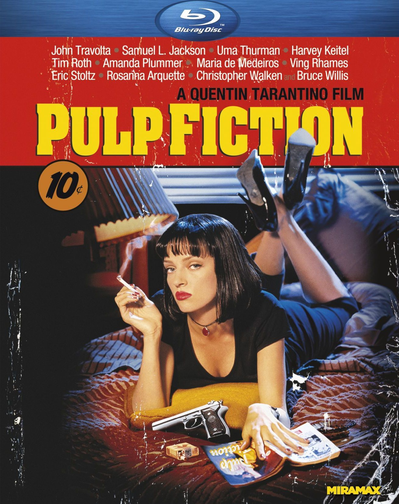

Pulp Fiction

Summary
This movie is not for kids! R rated movies
are meant for 17+ year olds, but you should be ready to watch such a graphic
movie. If you do not like intense scenes, then do not watch this movie.
However, the story and the editing that go into this movie are phenomenal.
It is a Tarantino classic. I first saw this when I was 19, and it was confusing at first.
It is not a traditional linear story, but rather scenes from the movie seem
to be put in almost random order. However, once you watch it and process
what you have just seen, then it becomes clear that this movie is one of
the all time greats. The direction and performances from John Travola and Samuel L. Jackson
are brilliant, and the cinematography is breathtaking.
The story mainly follows two partners in crime, Vince Vega and Jules Winnfield (Travolta and Jackson, respectively),
who go around carrying out orders given to them by their boss. This one is hard to summarize,
so give it a watch if you wish. I chose this color scheme because it fits with the vintage style of the movie,
and goes along with the intensity of it as well.